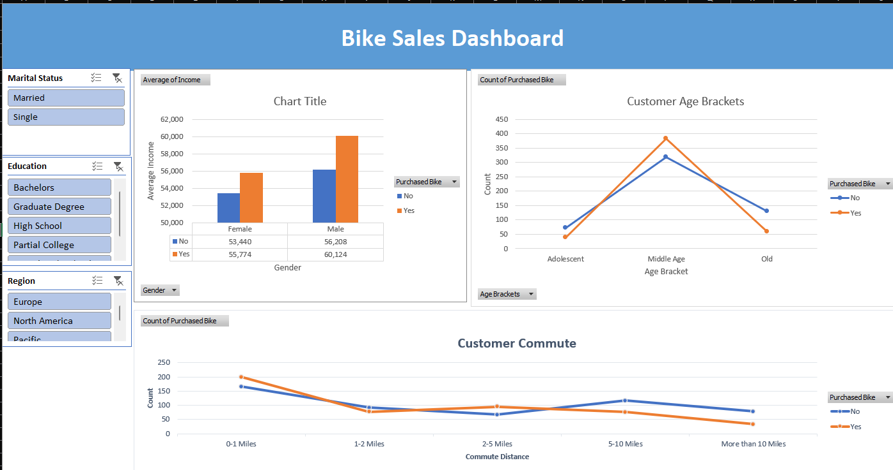
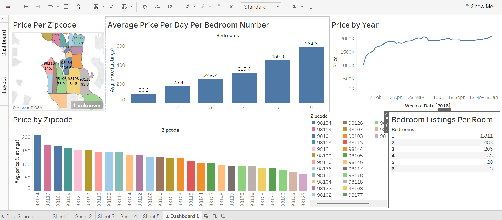

Projects Blog
This project began with a dataset of individuals Data Analytics and AI Projects and IoT Projects whether or not they purchased a bike. It included features like marital status, commute distance, home ownership, region, gender, and number of children. I approached it like a business case—what insights can help a company understand its bike-buying customers? The data was first cleaned to remove typos and inconsistencies. I grouped ages into brackets using IF statements and replaced abbreviations with clearer, readable labels. Once clean, I created pivot tables to uncover patterns—for instance, comparing average income by gender among bike buyers vs. non-buyers. Visualizing this as a bar chart quickly revealed that men not only earned more but were also more likely to buy bikes. I also explored commute distances and age groups to see how these factors influenced buying behavior. Each pivot table came with its own visual, making trends easy to spot. The final step was building a dashboard with slicers for interactivity. This allows a business owner to filter and view key customer insights at a glance—turning raw data into strategy.
Bike Buyers Report (Excel)
Tools used: Microsoft Excel – Pivot Tables, IF Statements, Data Cleaning, Dashboard
This project began with a dataset of individuals and whether or not they purchased a bike. It included features like marital status, commute distance, home ownership, region, gender, and number of children. I approached it like a business case—what insights can help a company understand its bike-buying customers? The data was first cleaned to remove typos and inconsistencies. I grouped ages into brackets using IF statements and replaced abbreviations with clearer, readable labels. Once clean, I created pivot tables to uncover patterns—for instance, comparing average income by gender among bike buyers vs. non-buyers. Visualizing this as a bar chart quickly revealed that men not only earned more but were also more likely to buy bikes. I also explored commute distances and age groups to see how these factors influenced buying behavior. Each pivot table came with its own visual, making trends easy to spot. The final step was building a dashboard with slicers for interactivity. This allows a business owner to filter and view key customer insights at a glance—turning raw data into strategy.
Airbnb Market Analysis (Tableau)
Tools used:Tableau – Bar Charts, Maps, Line Graphs, Filters
This analysis was built to help a potential Airbnb host answer the golden question: "How much can I actually make?" Using a dataset split into three tables—listings, reviews, and calendar—I explored patterns using Tableau. First, I visualized price distribution by ZIP code, both as a bar chart and on a map, highlighting high-value areas. I then analyzed the calendar data using line graphs to understand price trends week by week over multiple years. It helped answer questions like: When’s the best time to list? Digging deeper, I explored revenue potential by property type. I found that one-bedroom listings had the highest total earnings overall—over $63 million in daily revenue—but that was due to sheer volume (1,800+ listings). In contrast, a 6-bedroom home averaged $584 per night, meaning a host could earn nearly $500 in just one night. This kind of insight is gold for anyone considering what kind of property to list. A filter table showing the number of listings by bedroom count helped put it all in context, giving a full picture of supply vs. earning potential.
Data Professionals Survey Report (Power BI)
Tools used: Power BI – Power Query, Data Transformation, Interactive Dashboard
This project explored a dataset collected via an online survey of data professionals, covering everything from job roles to satisfaction with work-life balance. The aim was to present the experience and realities of data careers in an intuitive dashboard. Data cleaning was done in Power Query, where I grouped similar responses, split complex fields using delimiters, and extracted meaningful values. For example, survey responses like "Other (please specify)" were separated to isolate relevant insights. I also transformed textual ranges like "70K–90K" into numerical averages using custom formulas.
The dashboard includes:
- A total respondent count and average age (using KPI cards).
- A bar chart breaking down average salaries by job title.
- A tree map showing salary ranges across countries.
- A stacked column chart revealing favorite programming languages per job type.
- Gauges for visualizing satisfaction with salary and work-life balance.
- A doughnut chart highlighting the perceived difficulty of entering the tech industry.

Global Layoffs Dataset Cleaning (SQL)
Tools used:SQL (CTEs, Window Functions, Joins, TRIM, UPDATE, DELETE)
In this project, I took on the challenge of cleaning a real-world dataset of global layoffs using SQL—a key part of preparing data for deeper analysis. The raw data had no primary key, inconsistent entries, and a lot of duplication.
Step 1: Remove Duplicates
I created a duplicate of the table and used a Common Table Expression (CTE) with ROW_NUMBER()
partitioned by all columns. This let me flag duplicates—any row with a number greater than 1.
Because direct deletion via CTE wasn’t allowed, I created a secondary table with the row numbers
and deleted rows based on that.
i = 0;
while (!deck.isInOrder()) {
print 'Iteration ' + i;
deck.shuffle();
i++;
}
print 'It took ' + i + ' iterations to sort the deck.';
I used TRIM() functions to clean whitespace, then identified and merged similar but inconsistently named entries (e.g., “Google Inc.” vs. “Google”).
i = 0;
while (!deck.isInOrder()) {
print 'Iteration ' + i;
deck.shuffle();
i++;
}
print 'It took ' + i + ' iterations to sort the deck.';
To fill missing data, I created two versions of the table and used JOIN operations where one had nulls and the other didn’t, then updated missing values accordingly.
i = 0;
while (!deck.isInOrder()) {
print 'Iteration ' + i;
deck.shuffle();
i++;
}
print 'It took ' + i + ' iterations to sort the deck.';
After cleaning, I dropped helper columns and columns with excessive null values that offered little analytical value. The result? A clean, standardized dataset ready for dashboards or machine learning models.
i = 0;
while (!deck.isInOrder()) {
print 'Iteration ' + i;
deck.shuffle();
i++;
}
print 'It took ' + i + ' iterations to sort the deck.';
Fire Detection and Emergency Alert System (IoT)
Tools used:Raspberry Pi 3, DHT11 Sensor, MQ135 Gas Sensor, USB Camera, Buzzer, Amazon Web Services (AWS)
Fires remain a major cause of residential fatalities, especially when no one is home to respond to a traditional alarm. To tackle this, I built a fire detection system using IoT and automation technologies that not only detects fire outbreaks but also sends emergency alerts to homeowners and relevant authorities via the internet. The system is built around a Raspberry Pi 3, chosen for its flexibility and GPIO support, acting as the core microprocessor. It gathers data from a DHT11 sensor (for humidity and temperature) and an MQ135 gas sensor (to detect harmful gases and smoke). A USB camera captures real-time images of the environment, and a buzzer sounds a physical alarm on-site. All data and imagery are sent to Amazon Web Services, enabling remote monitoring. This solution bridges the gap between early detection and emergency response, ensuring safety even in the absence of occupants. It also laid the groundwork for a more intelligent, AI-enhanced version of the project (below).

AI-Enhanced Fire Prediction System (Cloud & Deep Learning)
Tools used: Amazon S3, AWS Lambda, Amazon SageMaker, Jupyter Notebook, Keras (TensorFlow backend), Python
Expanding on the IoT fire detection system, I developed a cloud-integrated machine learning extension that predicts fire outbreaks from visual data...
- Conv2D layers with 32, 64, and 128 neurons, each followed by MaxPooling.
- A dense layer with 128 neurons (ReLU activation).
- A final output layer with 1 neuron (Sigmoid activation) to classify fire/no-fire events.
This CNN achieved 76% accuracy...
Heart Attack Prediction System (ML, IoT, Web App)
Tools used: React, Firebase Firestore, Python , scikit-learn, UCI Heart Disease & CDC BRFSS Datasets
This project is a personal favorite—it combines machine learning, IoT, and full-stack development to
support preventive healthcare. I built a system to predict hypertension (a key risk factor for heart
attacks) using both user-provided lifestyle data and real-time sensor inputs.
The frontend is a React web application where users log weekly data including smoking habits, physical
activity, alcohol consumption, and diet. This data is stored and timestamped in Firebase Firestore,
enabling time-series analysis. The system is also equipped to receive live vitals such as blood
pressure from wearable IoT sensors.
On the backend, I trained a scikit-learn machine learning model using two datasets: the UCI Heart
Disease dataset and the CDC BRFSS dataset. The model classifies users as hypertensive or not,
combining behavioral and physiological features for a more holistic prediction.
The prediction results are presented in an intuitive dashboard, helping users track their heart
health over time. I used Notion for project management, breaking development into five parts:
Firebase integration, sensor module, model training, frontend UI, and system integration.
This project reinforced my understanding of health tech, full-stack architecture, and practical ML
deployment in real-world systems.


- © Untitled
- Design: HTML5 UP